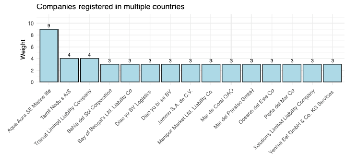
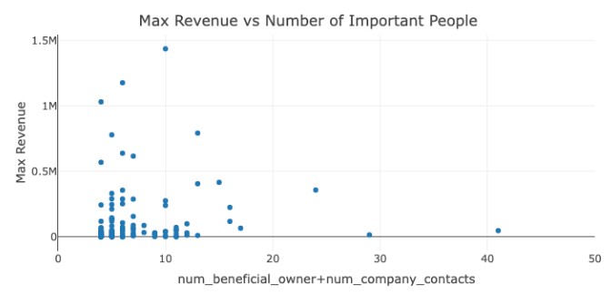
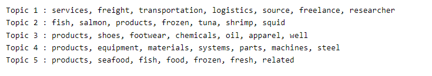
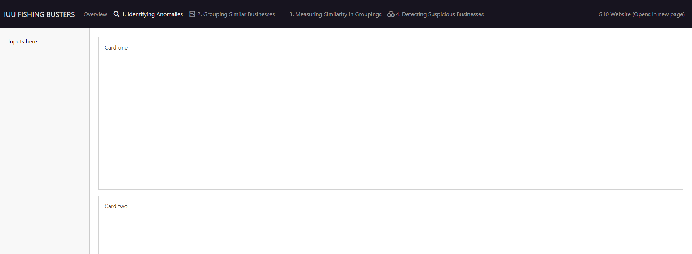
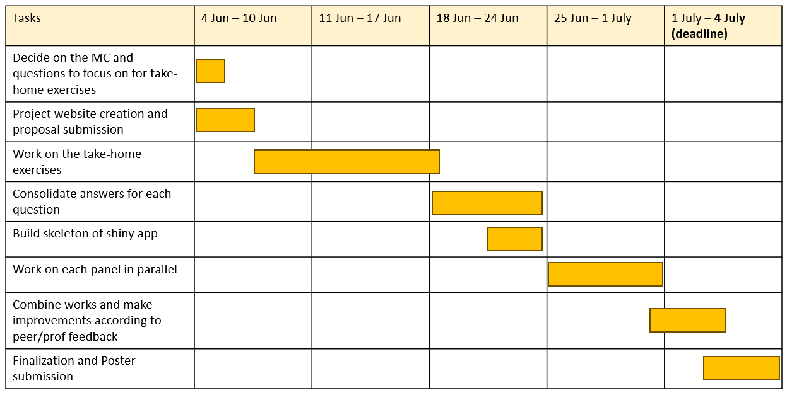

ISSS608 G10 Project Proposal - IUU Fishing Busters
Group members:
Deng Zhan
Liu Jiaqi
Tan Xin Xian Wilson
Problem Statement and Challenge Selection
Our group has decided to tackle mini-challenge 3 of VAST challenge 2023. The goal is to use various visual analytics and develop a new approach to help FishEye better understand fishing business anomalies, as well as identify companies/groups that may be engaged in illegal fishing. The following questions will be addressed:
Use visual analytics to identify anomalies in the business groups present in the knowledge graph.
Develop a visual analytics process to find similar businesses and group them. This analysis should focus on a business’s most important features and present those features clearly to the user.
Measure similarity of businesses that you group in the previous question. Express confidence in your groupings visually.
Based on your visualizations, provide evidence for or against the case that anomalous companies are involved in illegal fishing. Which business groups should FishEye investigate further?
Motivation
Illegal fishing poses a significant threat to the sustainability and conservation of marine resources. It damages marine ecosystems and disrupts the delicate balance of marine habitats. Overfishing also depletes fish stocks and threatens the availability of seafood as a food source.
Illegal fishing practices often involve the use of destructive methods such as dynamite or poison, which harm not only the targeted fish species but also other marine life and underwater habitats.
Illegal fishing also undermines the economic interests of legitimate fishermen and fishing communities. It creates unfair competition, reduces market prices, and negatively impacts the livelihoods of those who depend on fishing as a source of income.
The visual analytics tool which is to identify illegal fishing is motivated by the need to protect marine resources, conserve ecosystems and sustain fisheries. It is important for the long-term sustainability of our oceans and the well-being of both present and future generations.
Proposed Approach and Early Prototypes
To better tackle the problems, we will divide the tasks into two parts.
Questions 1 and 4
Question 1 and 4 will be studied together. By using various network analytics tools such as ggplot and plotly, we will try to identify companies involved in IUU fishing based on their business organizational structures. Companies that could be involved in IUU fishing are identified through 2 different approaches.


Questions 2 and 3
Questions 2 and 3 will be studied together. Appropriate text analysis techniques (e.g. topic modelling) will be used to group similar business based on their product_services attribute. Then we will compare the business by using quantitative measures such as revenue to explore similarity of business in the groups identified.

For example, from the top terms of each topic we can easily summarize the respective business feature for the groups as following. After that, we will make use of this information to identify anomalous companies or structures involved in illegal fishing as well. • Topic 1: transportation and logistics • Topic 2: fish and other seafood • Topic 3: chemicals and accessories • Topic 4: equipment • Topic 5: food products
Shiny App Development
All of the above will be brought together and built into a Shiny application. As there are some limitations to achieve full interactivity of network plots using Quarto website in Take-home Exercise 3, we hope to use this project to test the limits of the full extent of interactivity and adjustable user input that can be achieved with a Shiny app instead of a Quarto document. One such element would be the ability for the user to select a particular business group or centrality measure to explore, as a smaller network would be much easier for visual inspection and comparison.
An initial design of skeleton and page layout is shown below. Each panel will tackle one question from MC3. A sidebar layout will be used for each panel, with user input on the left and visualizations on the right.

Project Timeline
